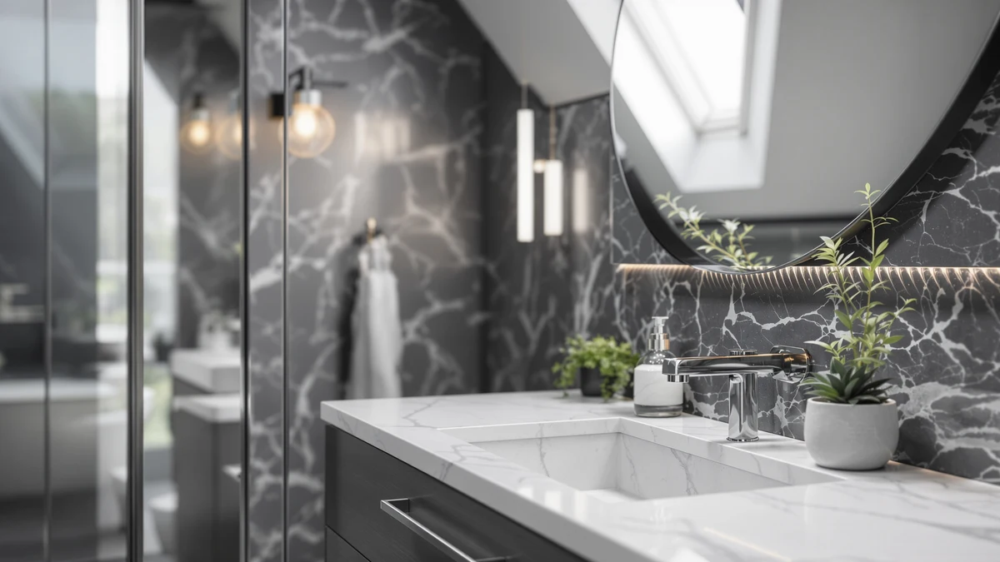

WindBay 30" Wall Mount Review (2026): Worth It?
Prices and picks verified as of October 2026. Independent, reader-supported reviews.


Quick Answer
In this windbay 30" wall mount review, the WindBay 30" Wall Mount Floating vanity costs $529.00 and is the only one of four compared picks with a public review history, at 4.5 out of 5 across 200 ratings. It costs slightly more than the three alternatives below, but its compact 30-inch, wall-mounted footprint suits a smaller bathroom that the larger Quicklock, CozyHommie, and Chyanmoo cabinets are not built for.
Our pick: WindBay 30" Wall Mount Floating — $529.00 Check Price on Amazon
Bottom line: our top pick is the WindBay 30" Wall Mount Floating Vanity Dark Grey at $529.
Things to Know Before You Buy
- Price range: the four vanities in this windbay 30" wall mount review span $512.98 to $529.00, a gap of about $16.
- The WindBay is the only pick here with a public rating, at 4.5 out of 5 across 200 reviews; the other three have no review history yet on Amazon.
- Size varies widely: the WindBay is a compact 30-inch cabinet, the CozyHommie measures 42 inches, the Chyanmoo measures 48 inches, and the Quicklock measures 60 inches.
- Only the CozyHommie and Chyanmoo listings specify an included sink; the WindBay and Quicklock titles describe cabinets only, so confirm what each listing includes before you buy.
- Material differs by pick: the WindBay uses MDF and engineered wood, the Quicklock uses raw maple, the CozyHommie uses solid wood and hardwood, and the Chyanmoo uses FSC-certified wood.
In this windbay 30" wall mount review, we compare the WindBay 30" Wall Mount Floating vanity against three close-priced alternatives, so you can see what $513 to $529 buys in a compact vanity cabinet right now. Most shoppers consider a 30-inch floating design because it opens up floor space for cleaning and gives a small bathroom a more modern look than a floor-standing cabinet, but the four picks here differ once you look past the product photos, especially on material, size, and whether a sink comes included. A 30-inch footprint usually goes into a smaller bathroom or powder room, so cabinet depth and wall-mounting requirements matter as much as the finish on the doors.
The short version: the WindBay wins on price point and review history, since it already holds 200 verified ratings at 4.5 out of 5 while the three alternatives have none yet on Amazon. It loses on size next to the Quicklock, CozyHommie, and Chyanmoo picks, since its 30-inch cabinet suits a smaller bathroom and the listing doesn't specify whether a sink comes included. If a compact footprint and an established review history matter more to you than a larger vanity with a sink built in, the WindBay below is the stronger pick. We break down all four options, including where each one falls short, in the sections that follow. None of this is an endorsement blind to price: at $529.00, the WindBay sits at the top of this group, so you're paying a small premium for that review history and the space savings of a floating design.
Why You Should Trust Us
Ilane Tall covers bathroom vanities and fixtures for Best Bathroom Vanities and put together this windbay 30" wall mount review by comparing manufacturer specs, current Amazon pricing, and listed features rather than repeating marketing copy. We do not run a fake testing lab or claim to have installed every vanity we cover. Instead, we cross-check dimensions, materials, and pricing against what each listing documents, and we say so plainly when a product has no review history to back a confident recommendation. That distinction matters here, since three of the four vanities in this comparison have not collected a public rating yet.
Our Research Experience
This review doesn't involve physical testing. We compared the WindBay 30" Wall Mount Floating vanity against its closest-priced competitors using the manufacturer's listed materials, dimensions, and construction details, since the Quicklock, CozyHommie, and Chyanmoo alternatives have no public rating or review count yet on Amazon. The WindBay is the exception, with 200 verified ratings averaging 4.5 out of 5, so we weighed that track record alongside the specs for the other three. When a listing leaves out a detail, such as whether a sink comes included, we flag the gap in this windbay 30" wall mount review instead of guessing at what the box contains. We also cross-referenced each product's listed dimensions against its category tags to confirm the WindBay's compact footprint and the wider sizing on the three alternatives, rather than taking a single product photo at face value.
Overview & Specs

WindBay 30" Wall Mount Floating
What we like
- Wall-mounted floating design frees up floor space underneath for cleaning and storage
- Already holds 200 verified ratings at 4.5 out of 5, the only pick in this comparison with a public review history
- Compact 30-inch width and dark grey finish suit a smaller bathroom or powder room better than the larger alternatives below
Flaws but not dealbreakers
- The listing doesn't specify whether a sink or faucet comes included, unlike the CozyHommie and Chyanmoo alternatives below
- MDF and engineered wood construction is more moisture-sensitive than the solid wood used in the CozyHommie pick
- Floating installation needs mounting into wall studs or heavy-duty anchors, which adds setup work a floor-standing cabinet does not need
| Material | MDF / engineered wood |
| Size | — |
The WindBay 30" Wall Mount Floating vanity is the strongest pick in this windbay 30" wall mount review because it is the only one here with a public review history, at 4.5 out of 5 across 200 ratings. At 30 inches wide, it is the most compact cabinet in this comparison, built for a smaller bathroom or powder room rather than a double-sink layout. The dark grey finish and wall-mounted, floating design give it a cleaner, more current look than a floor-standing cabinet, and lifting it off the floor also frees up space underneath for a trash can, a stool, or simply easier mopping.
Where the WindBay falls short is clarity on what you actually get. The listing describes the cabinet and its dark grey finish but doesn't specify a sink, countertop, or faucet the way the CozyHommie and Chyanmoo listings do, so check the product images and description closely before you buy if you need those parts included. The cabinet's MDF and engineered wood core handles normal bathroom humidity fine, but it swells faster than the solid wood used in the CozyHommie pick if water sits on the surface for hours. Because it floats off the wall, you'll also need studs or heavy-duty anchors rated for the combined weight of the cabinet and anything stored inside before you mount it.
What We Liked
Across this windbay 30" wall mount review, the WindBay's review history stands out most: 200 verified ratings at 4.5 out of 5 give you more to go on than the zero reviews behind the Quicklock, CozyHommie, and Chyanmoo listings. Its 30-inch footprint and floating, wall-mounted design also suit a smaller bathroom better than the 42-to-60-inch alternatives, and lifting the cabinet off the floor opens up room underneath that none of the floor-standing picks can offer. The dark grey finish reads as more current than the raw maple or pebble gray tones on the two alternatives that lean traditional.
What Could Be Better
The biggest gap is detail. The WindBay listing doesn't say whether a sink, countertop, or faucet comes included, so you may need to budget for those separately in a way you wouldn't with the CozyHommie or Chyanmoo, both of which specify an integrated sink. MDF and engineered wood construction also asks for more care around standing water than the solid wood used in the CozyHommie pick. And because the WindBay is the smallest cabinet in this windbay 30" wall mount review at 30 inches wide, it won't work if your bathroom layout calls for a double sink or the wider 48-to-60-inch footprint of the Chyanmoo or Quicklock. If you've shopped for a 30-inch vanity before, you know that size range tends to skip the drawer count and storage depth you get on a 42-to-60-inch cabinet, and the WindBay's listing doesn't break out drawer or shelf details the way the CozyHommie and Chyanmoo listings do.
Who Is It For?
This vanity fits a smaller bathroom or powder room where floor space is tight and a floating design helps with cleaning underneath. It's a reasonable match if you'd rather buy a vanity with an established review history, since the WindBay is the only pick here with public ratings to check. It's a weaker fit if you need a sink included out of the box, if your bathroom wall can't support a floating mount, or if you need the larger footprint of the CozyHommie, Chyanmoo, or Quicklock alternatives below.
Alternatives to Consider
If the WindBay doesn't fit your bathroom or your need for an included sink, these three alternatives from this windbay 30" wall mount review cover larger footprints and two different sink setups.

Editor’s Pick
Quicklock RTA (Ready-to-Assemble) | Bathroom
A 60-inch ready-to-assemble Shaker-style cabinet in raw maple with soft-close hinges and partial overlay doors, made in America and sold without a back panel or sink, for a bathroom that needs significantly more width than the WindBay provides.
$519.99
Check Price on Amazon
Best Value
CozyHommie Solid Wood RTA 42"
A 42-inch solid wood and hardwood single-sink vanity with soft-close doors and three right-side drawers in a pebble gray finish, for a bathroom that wants an included sink and more moisture-resistant construction than engineered wood.
$519.99
Check Price on Amazon
Premium Choice
Chyanmoo 48 Inch Bathroom Vanity
A 48-inch freestanding farmhouse-style vanity with a ceramic sink, six drawers, two doors, and an FSC-certified wood frame, priced lowest of the four at $512.98.
$512.98
Check Price on AmazonDoes the WindBay 30" Wall Mount Floating vanity come with a sink or faucet?
The listing doesn't specify a sink or faucet, unlike the CozyHommie and Chyanmoo alternatives in this windbay 30" wall mount review, which both describe an integrated sink.
Is a 30-inch wall-mounted vanity hard to install?
It depends on your wall more than the cabinet itself.
Frequently Asked Questions
Does the WindBay 30" Wall Mount Floating vanity come with a sink or faucet?
The listing doesn't specify a sink or faucet, unlike the CozyHommie and Chyanmoo alternatives in this windbay 30" wall mount review, which both describe an integrated sink. Check the product images and description closely, and budget for a separate sink, faucet, and drain if the WindBay listing doesn't include them.
Is a 30-inch wall-mounted vanity hard to install?
It depends on your wall more than the cabinet itself. A floating vanity like the WindBay needs to be mounted into wall studs or with heavy-duty anchors rated for the combined weight of the cabinet, countertop, and stored items, so confirm your bathroom wall can support that before installing.
Is MDF construction a dealbreaker for a bathroom vanity?
Not if you keep standing water off the surface. MDF and engineered wood, like the core in the WindBay, hold up fine under normal bathroom humidity, but they swell faster than the solid wood used in the CozyHommie pick when water sits on the surface for hours.
Final Verdict
This windbay 30" wall mount review comes down to a straightforward trade: WindBay offers the only public review history in the group, at 4.5 out of 5 across 200 ratings, in the smallest footprint at 30 inches wide. It loses on detail, since the listing doesn't specify an included sink the way the CozyHommie and Chyanmoo do, and it loses on size if your bathroom needs more than 30 inches of cabinet width. For a smaller bathroom where an established review history matters more than a larger footprint, that combination makes WindBay the strongest pick of the four. If you need a sink included or a wider cabinet, the CozyHommie, Chyanmoo, or Quicklock alternatives above are worth a closer look instead.